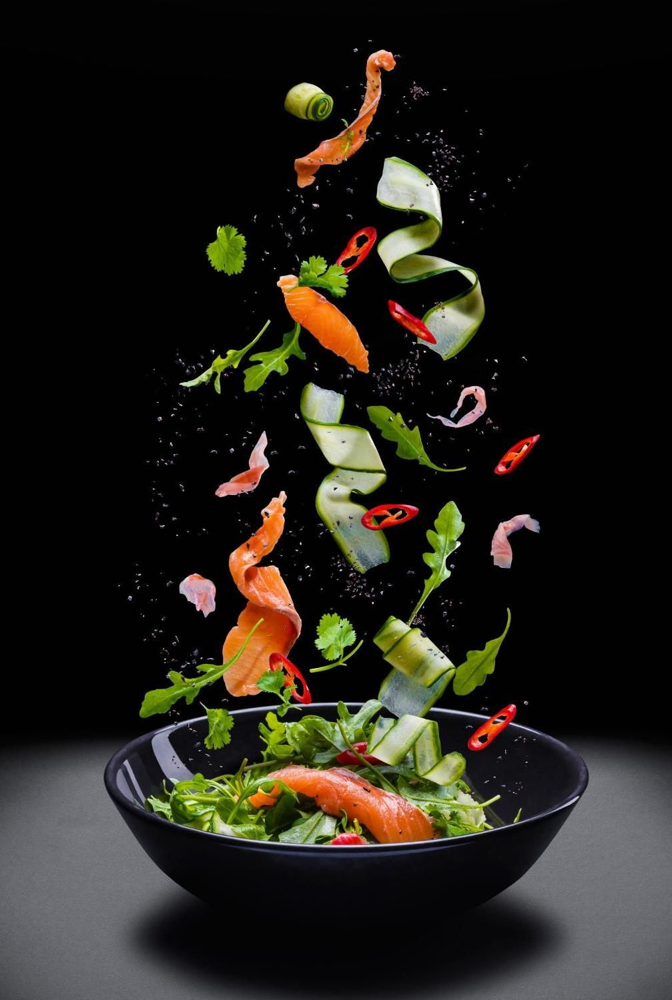
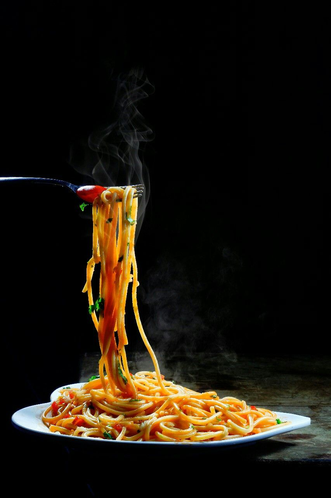

APERITIVOS CLÁSSICOS
- Salsichas italianas grelhadas
- Cesto com azeitonas e focaccia com molho
- Balsâmico para mergulhar
- Travessa de presunto e ricotta
- Salmão fumado
MASSA TRADICIONAL
- Fettuccine Al Pomodoro
- Spaghetti Alla Punttanesca
- Pasta Amatriciana (Spaghetti ou Fettuccine) Spaghetti
- Cacio E Pepe

CERNE E PEIXE
- Frango parmegiana
- Peixe do dia
- Bife Angus e Camarão
- Lombinho de Angus (Todos servidos com legumes)
VINHO AO COPO
- Valley Pinot Noir
- Cabernet Sauvignon
- Sangiovese Provincia
- O Melhor Montepulciano
- (Todos servidos com legumes>
Nossa cantina italiana oferece uma autêntica experiência gastronômica italiana, trazendo para você o sabor e a tradição das delícias culinárias da Itália. Com um cardápio cuidadosamente elaborado, preparamos pratos que cativam os sentidos, desde massas frescas artesanais até as mais suculentas e aromáticas pizzas. Nossos chefs dedicados combinam ingredientes de alta qualidade, como queijos ricamente texturizados, molhos feitos à mão e ervas frescas, para criar refeições que lembram as cozinhas familiares italianas. Além disso, oferecemos uma seleção de vinhos finos, escolhidos a dedo, para complementar perfeitamente suas refeições. Venha desfrutar da hospitalidade italiana e da excelência culinária em nossa cantina, onde cada prato conta uma história de amor pela comida.